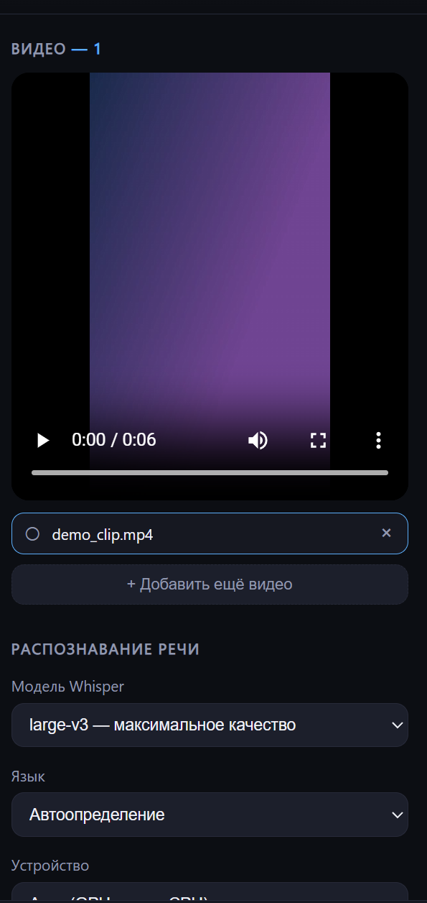
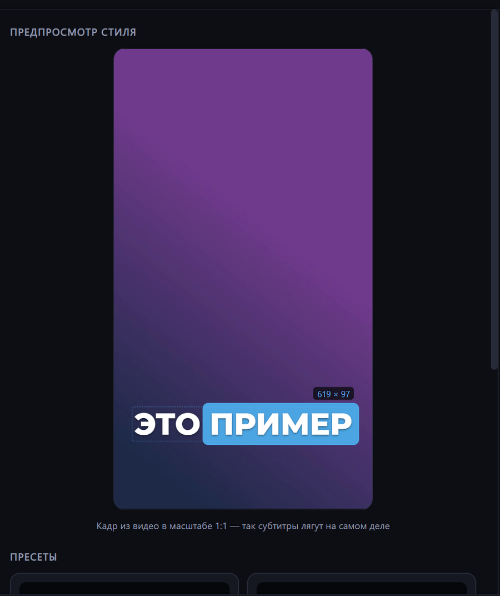
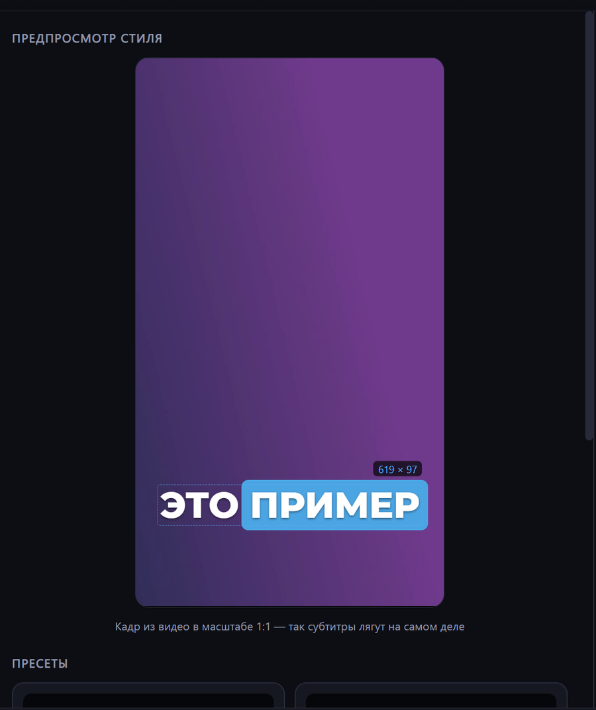
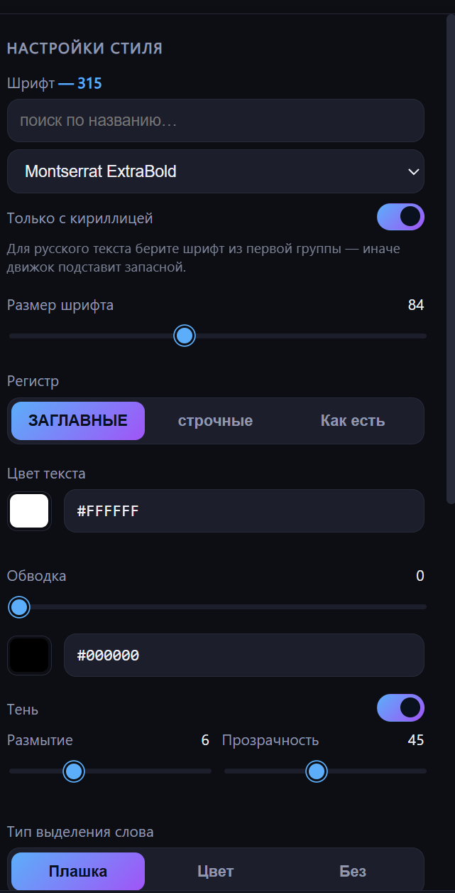
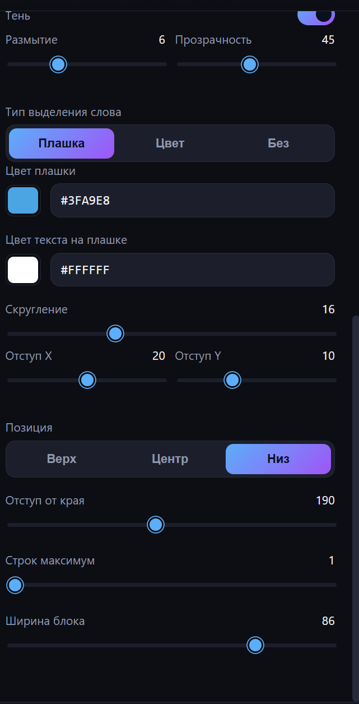

Предпросмотр показывает кадр из вашего видео в масштабе 1:1 — субтитры лягут ровно так же
Субтитры с подсветкой произносимого слова
Распознаёт речь в видео и вшивает субтитры, подсвечивая слово, которое диктор произносит прямо сейчас — как в роликах VK, TikTok и Reels.
Предпросмотр показывает кадр из вашего видео в масштабе 1:1 — субтитры лягут ровно так же
Всё считается на вашем компьютере: видео и звук никуда не отправляются.
Цветная плашка под текущим словом, смена цвета текста (караоке) или простые субтитры без подсветки.
Whisper large-v3 с пословными таймкодами. На видеокарте NVIDIA, с автоматическим переходом на процессор.
Перетащите хоть десяток роликов — обработаются очередью, с прогрессом по каждому.
Все установленные в Windows плюс 14 из комплекта. Фильтр «только с кириллицей» проверяет реальные глифы, а не название.
Кадр из вашего видео 1:1: размер шрифта, отступы и переносы видны такими, какими попадут в результат.
Пять готовых; свои сохраняются и удаляются в один клик. Хранятся простым JSON.
Окно поделено на три колонки: слева — что обрабатываем, в центре — как это выглядит, справа — как это настроить.

что обрабатываем
large-v3 (лучшее качество) до base
(черновик). Подсказка под списком говорит, скачана ли модель и
сколько весит загрузка, если нет. Скачивание идёт при запуске
обработки и показывает проценты.
как это выглядит

готовые стили
presets/ обычными
JSON-файлами, их можно править руками и передавать другим.
как это настроить

главное отличие от обычных субтитров
Мелочи, из-за которых обычно приходится поправлять субтитры вручную.
«в», «и», «на», «что» переносятся вместе со следующим словом и никогда не показываются отдельным кадром.
Строится по заглавным буквам, поэтому слова с хвостами (Д, Ц, Щ, У) не съезжают, а высота не скачет по строке.
При крупном шрифте или длинном слове строка ужимается ровно настолько, чтобы уместиться.
Два независимых шага: распознать речь и нарисовать субтитры. Разделение сделано специально — стиль можно перебирать сколько угодно, речь распознаётся один раз.
Whisper через faster-whisper выдаёт не просто текст, а время начала и конца каждого слова — именно это позволяет подсвечивать слово в такт речи. Считается на видеокарте, при её отсутствии на процессоре.
Результат сохраняется рядом с проектом. Поменяли шрифт или цвет — повторный рендер занимает секунды, речь заново не распознаётся.
Каждое состояние строки рисуется как картинка поверх кадра: текст, обводка, тень и плашка. Здесь же работают правила переносов и оптическое выравнивание плашки.
Кадры накладываются на исходное видео и кодируются в H.264 со звуком оригинала. Разрешение и частота кадров сохраняются.
Нативное окно Windows, внутри — HTML-страница. Никакого браузера ставить не нужно, всё работает на встроенном движке системы.
Единственные обращения в сеть — разовая загрузка модели и шрифтов при установке. Сами видео и расшифровки никуда не отправляются.
Python и ffmpeg ставить отдельно не нужно — установщик принесёт их в папку проекта.
git clone https://github.com/jimmorisedu-boop/aisubs-local.gitsetup.bat — поставит Python, ffmpeg, библиотеки
CUDA (если есть видеокарта NVIDIA) и предложит на выбор модель
распознавания: от small (~500 МБ) до
large-v3 (~3 ГБ).run.bat — откроется окно приложения.| Операционная система | Windows 10 или 11, 64 бита |
| Видеокарта | NVIDIA с CUDA — желательно. Без неё работает на процессоре, но медленнее |
| Место на диске | около 5 ГБ: окружение и модель распознавания |
| Интернет | только для установки и разовой загрузки модели |